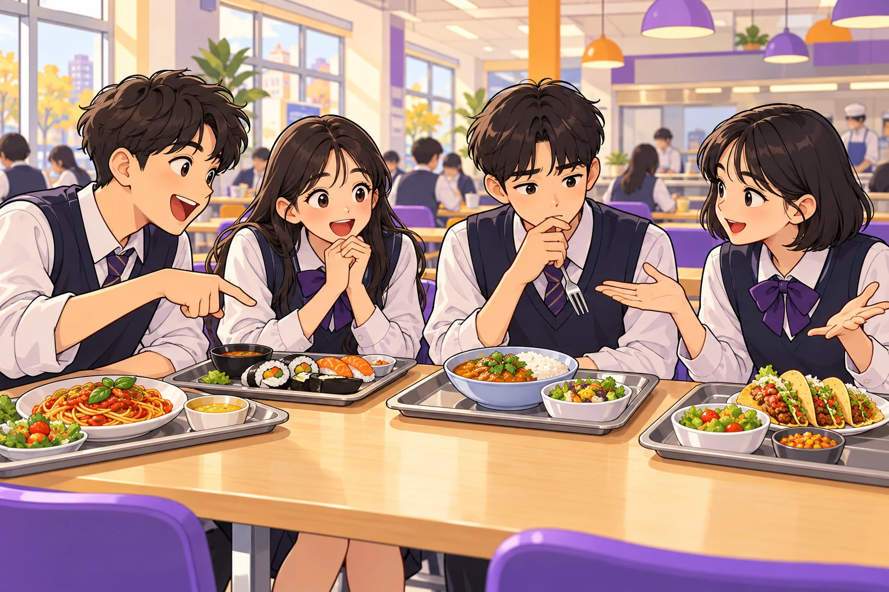

“급식으로 새로운 문화를
만나 보고 싶어!”
직접 경험하면 낯선 음식에 대한 생각이 달라질 수도 있잖아.
SOCIAL STUDIES × FOOD CULTURE
새로운 맛이 반가운 친구도,
낯선 맛이 걱정되는 친구도.
우리, 같은 식탁에 앉을 수 있을까?

음식 문화의 배경을 알아보고, 서로의 선택을 존중하는 방법을 제안한다.
01 / MEET THE SITUATION
우리 학교가 매달 한 번씩 여러 나라의 음식을 급식으로 제공하려고 합니다. 새로운 음식을 먹어 보고 싶다는 학생도 있고, 입맛에 맞지 않을까 걱정하는 학생도 있습니다. 여러분은 어떻게 생각하나요?
직접 경험하면 낯선 음식에 대한 생각이 달라질 수도 있잖아.
입맛도 다르고, 재료나 식생활 때문에 먹기 어려운 친구도 있을 거야.
두 친구가 중요하게 생각하는 것은 무엇인가요? 걱정하는 친구를 ‘문화를 존중하지 않는다’고 단정해도 될까요?
02 / CULTURE DETECTIVES
두 자료를 읽고, 음식과 사람들의 생활이 어떻게 연결되는지 조사하세요.
한국의 김장은 김치를 많이 담가 겨울을 준비하며 함께 나누는 문화입니다. 늦가을에 사람들이 모여 김치를 만들고 나누는 과정에는 협력과 이웃 간 관계가 담겨 있습니다.
김치를 이해할 때는 맵거나 시다는 맛뿐 아니라, 계절에 맞춰 음식을 준비하고 함께 나누는 생활도 살펴볼 수 있습니다.
출처: UNESCO 김장 소개 ↗멕시코 전통 음식 문화에서는 옥수수, 콩, 고추가 중요한 재료입니다. 이 음식 문화에는 작물을 기르는 방법, 조리 기술, 의례와 공동체의 관습이 함께 담겨 있습니다.
한 접시의 음식을 이해하려면 재료의 맛뿐 아니라, 그 재료를 길러 온 환경과 지식을 전해 온 사람들의 삶도 살펴봐야 합니다.
출처: UNESCO 멕시코 전통 음식 소개 ↗UNESCO 소개를 중1 수준에 맞게 재구성한 자료입니다. 같은 나라 안에서도 지역·가정·개인에 따라 식생활은 다릅니다.
각 사례에서 문화적 배경을 한 가지씩 찾고, 자료 속 근거에 밑줄을 그으세요. 두 사례의 공통점은 무엇인가요?
“맛만 평가할 때 놓치는 것은?” → 계절, 농업, 나눔, 관계와 같은 생활의 맥락. “우리에게 익숙한 음식도 누군가에게는 낯설 수 있을까?” → 익숙함은 문화의 우열을 정하는 기준이 아님.
03 / MAKE YOUR CASE
운영 여부를 토론해요. 문화의 우열을 가리는 토론은 아니에요.
찬성 / 반대 / 조건부 찬성 중 선택하고 주장을 한 문장으로.
자료 A 또는 B의 내용 + 그 내용이 내 주장을 뒷받침하는 이유.
상대 주장을 먼저 정확히 요약한 뒤, 내 생각이나 대안을 말하기.
발언 준비가 되면 시작하세요.
개별 주장·근거 쓰기 4분 → 짝 또는 모둠에서 양쪽 입장 발표 4분 → 상대 의견 요약·질문 2분 → 내 생각 보완 2분. 찬반 인원과 관계없이 두 관점을 모두 검토합니다. 실제 선호나 가정의 식생활 공개를 요구하지 않습니다.
04 / DESIGN TOGETHER
‘누구나 즐긴다’는 건 모두가 같은 음식을 먹는다는 뜻일까요?
먹지 않더라도 문화를 배우고 참여할 수 있는 방법을 생각해 보세요.
대체 메뉴나 선택 메뉴를 마련하면 어떤 걱정을 줄일 수 있을까요?
음식의 재료·유래·생활 배경을 어떻게 소개할까요?
사전 설문에서 무엇을 묻고, 소수의 의견은 어떻게 반영할까요?
제안 2가지 → 각각 해결할 걱정 → 문화 이해에 도움이 되는 이유를 연결하세요. 비용·조리 시간 등 실행 조건도 한 가지 적어 보세요.
예: ‘재료와 문화 배경을 설명하는 메뉴 카드 + 선택 메뉴’를 제안할 수 있습니다. 메뉴 카드는 맛 이외의 생활 맥락을 알려 주고, 선택 메뉴는 먹기 어려운 학생의 참여를 돕습니다. 구체적인 메뉴와 안전·조리 가능 여부는 영양교사와 협의한다는 실행 조건을 붙여 봅니다.
05 / ONE LAST BITE
생각이 그대로라면, 더 분명해진 근거를 적어도 좋아요.
화면 체크는 수업 중 확인용이며 저장되지 않습니다.PRINT & TAKE IT TO CLASS
A4 기준 · 한글 글꼴 포함 · 학생 개인 기기 없이 수업 가능
상황 그림·읽기 자료 1쪽 + 쓰기 활동 2쪽
PDF 다운로드 ↓학생용 · 총 2쪽문화 조사 · 주장과 근거 · 공동 제안 · 성찰
PDF 다운로드 ↓교사용 · 총 2쪽45분 흐름 · 발문 · 예상 응답 · 관찰 기준
PDF 다운로드 ↓인쇄 안내: 학생용 세트는 A4 단면 3쪽을 권장합니다. 활동지만 인쇄하면 양면 1장으로 사용할 수 있어요.
TEACHER’S NOTE
[9사(일사)02-03] “여러 집단에서 나타나는 다양한 문화 사례들을 조사하고, 문화를 이해하는 바람직한 태도에 대하여 토의한다.”
교육과정 MCP 조회 원문 기준. 국가교육위원회 고시 제2024-3호 별책 7 사회과 교육과정, PDF 62쪽. 수업 목표: ① 두 음식 문화 사례의 배경을 자료에서 찾는다. ② 근거를 들어 운영 여부를 토론한다. ③ 문화적 배경과 개인의 선택을 존중하는 운영안을 제안한다.
준비물: 교사용 화면, 학생용 세트 1인 1부, 필기도구. 4인 모둠 권장. 상황 5분 → 자료 조사 10분 → 토론 12분 → 운영안 만들기·공유 13분 → 성찰 5분.
자료 조사: 개별 읽기 4분, 짝 확인 3분, 기록 3분. 공동 설계: 모둠 제안 7분, 발표·비교 4분, 수정 2분. 실제 음식 시식은 필요하지 않습니다.
자료 이해: 사례 두 개의 배경과 근거를 찾았는가? 주장·근거: 자료와 주장의 연결을 설명했는가? 존중·적용: 상대의 걱정을 반영하고 선택권과 문화 이해를 함께 고려했는가?
찬반 입장 자체를 평가하지 않습니다. “좋아요”에서 멈춘 응답에는 “어떤 자료가 그렇게 생각하게 했니?”라고 묻습니다. 단순 선호 응답에는 “그 음식을 먹는 사람들의 생활 배경은 무엇일까?”를 덧붙입니다.
나라별 음식 하나로 그 나라 전체를 일반화하지 않습니다. 문화 존중은 모든 음식을 반드시 먹는다는 뜻이 아닙니다. 학생에게 알레르기·종교·가정 배경 등의 개인 정보를 공개하게 하지 않습니다. 특정 문화나 친구를 웃음거리로 삼는 표현은 바꾸어 말하도록 안내합니다.
문화 자료: 위 UNESCO 원문 링크 참고(2026-10-28 확인). 상황과 대화는 수업용 창작이며, 상황 그림은 AI 생성입니다. 웹페이지는 학생 답안을 전송하거나 수집하지 않습니다.